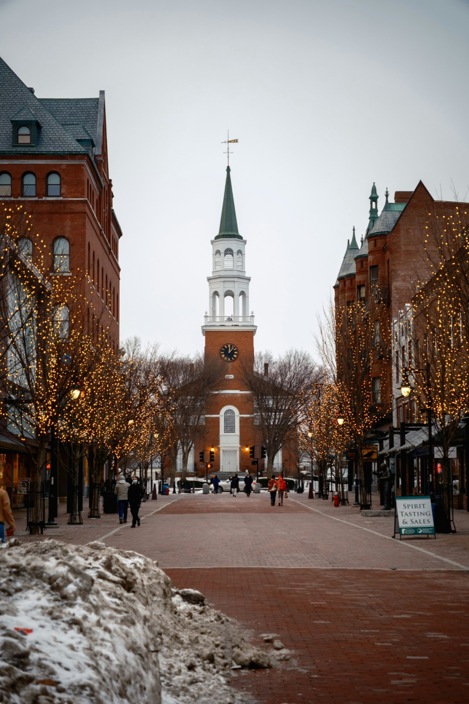
Every shirt on this page has a story.
Burlington's unofficial streetwear: original designs on Comfort Colors tees, printed one at a time. Wearing one is the entire marketing budget. Scroll for the stories, or skip to the rack you can only earn.
Tees $25 · long sleeves $30 · embroidered $35, plus shipping. Every buy button goes to the Printify store; nothing is sold on this page.
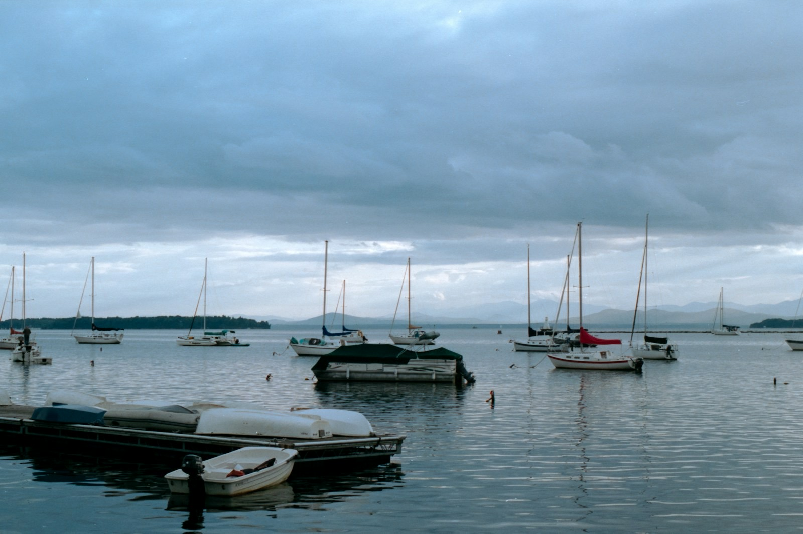
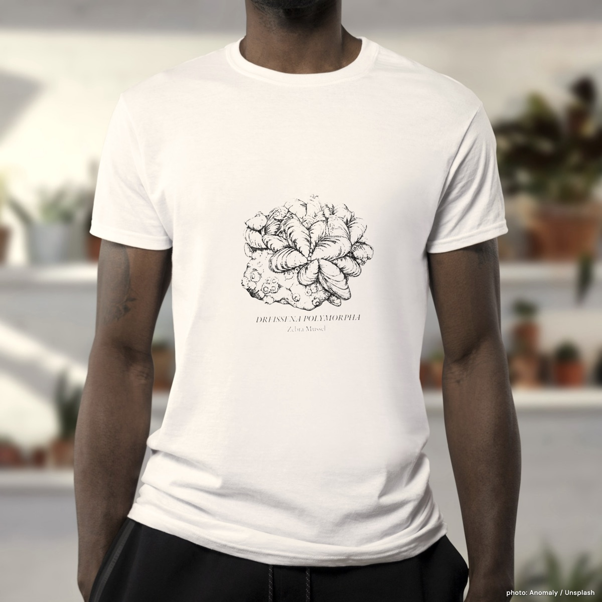
Zebra Mussel
Dreissena polymorpha. Drawn like a prized specimen in a Victorian field guide.
The zebra mussel is the undeniable villain of the lake, so it gets the know-your-enemy treatment: a sharp, invasive nuisance turned into a surprisingly intricate, vintage-looking biology specimen. Fine-line ink on a blue jean Comfort Colors tee.
For the person who has cut a foot on one and still went back in.
Buy it on Printify $25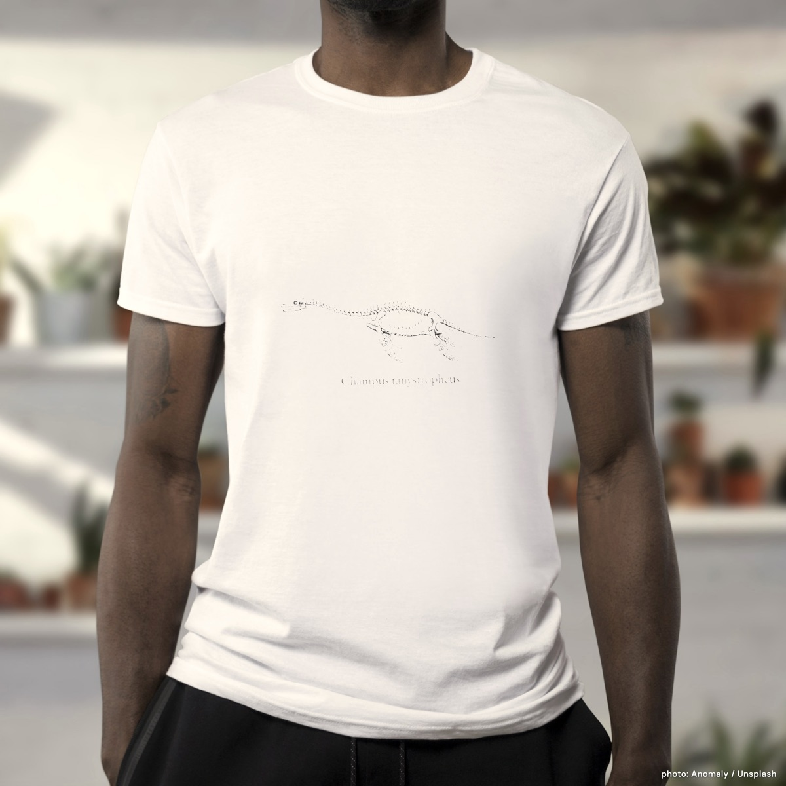
Champus Fossil
Champus tanystropheus. Not a mascot. Evidence.
This strips away the cartoon entirely and treats Champ like a prehistoric biology specimen. It reads less like a souvenir and more like a page torn from an old field journal, which is how the true believers prefer it.
For anyone who has squinted at the lake at dusk and seen something.
Buy it on Printify $25University of the Pit
UNIVERSITY OF THE PIT, over a tower crane. Go team.
A classic collegiate shirt for Burlington's most famous hole in the ground. It commemorates the decade we all spent waiting for something to rise from the ashes of the old Church Street mall. If you walked past it every day, you earned the degree.
For everyone who gave directions using the Pit as a landmark.
Buy it on Printify $25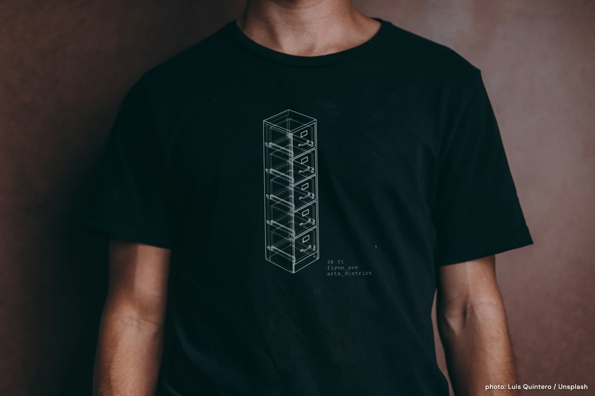
World's Tallest Filing Cabinet
A wireframe, and three lines of specs: 38 ft · flynn_ave · arts_district.
The world's tallest filing cabinet is a piece of local lore that defies explanation, so it finally gets the abstract technical drawing it deserves. The real one has a few more drawers. This one hits the right notes.
For the person who brings out-of-town visitors to Flynn Avenue on purpose.
Buy it on Printify $25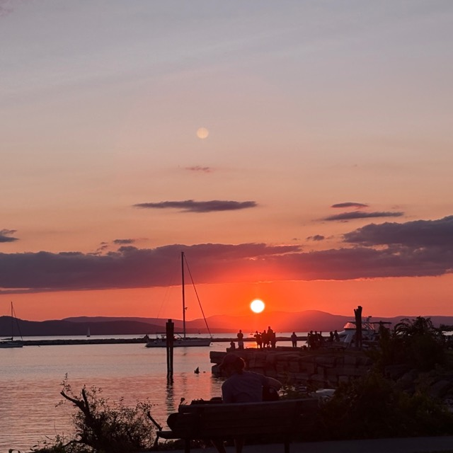
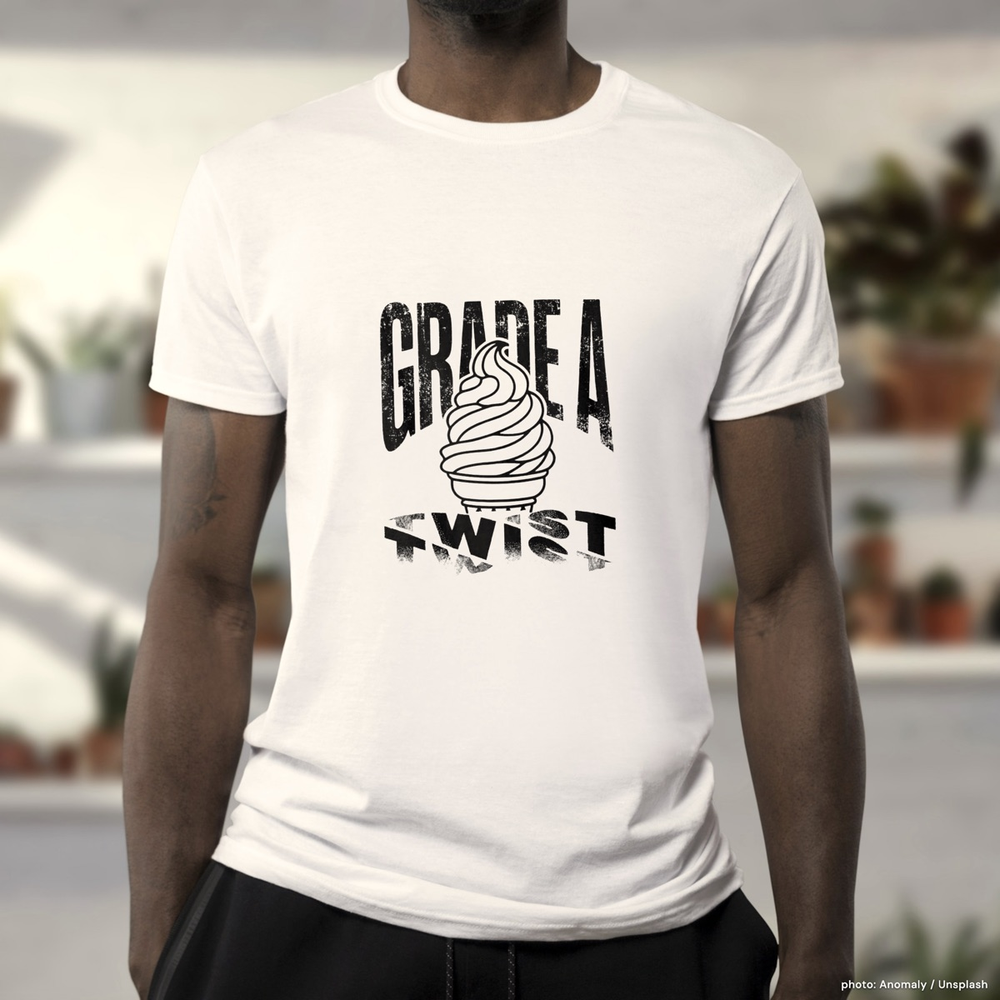
Grade A Twist
GRADE A TWIST, over a creemee that means it.
The maple creemee is basically our state religion, but most shirts treat it like a joke. This one gives it the reverence of a vintage culinary brand, the kind of label you would find on a tin in your grandmother's pantry.
For creemee people. You know if you are one.
Buy it on Printify $25Burlington Gray
BURLINGTON GRAY, under bare branches. The colour of the view out your window from November to April.
Tourists chase the green summers and the orange autumns. This design honors the honest, slate-gray reality of the months in between, matched to mud season and the long wait for the lake to thaw. Also available embroidered, for people who commit.
For people who stay through March and would not live anywhere else.
Buy it on Printify $25 · $35 embroidered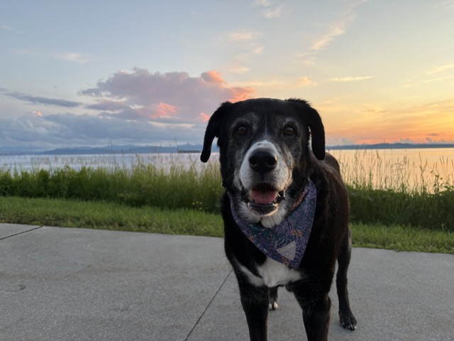
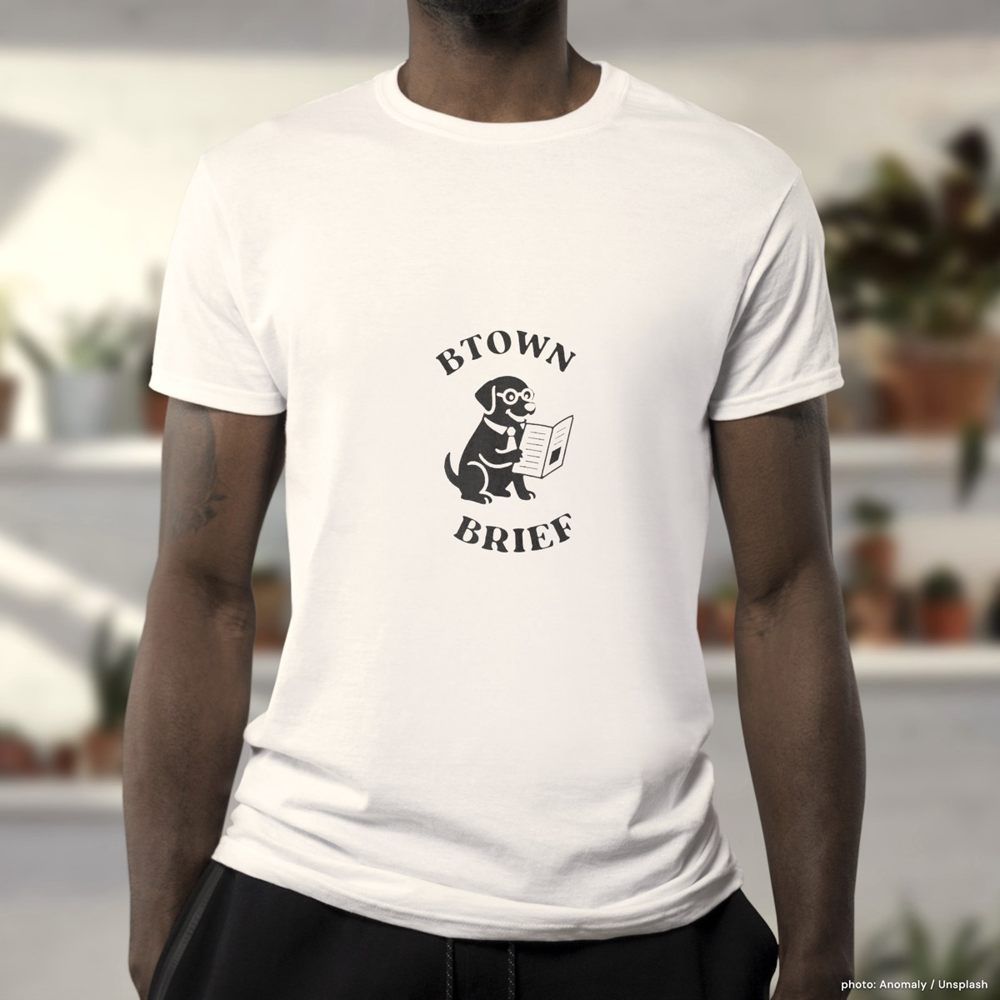
The Lab
BTOWN BRIEF, around a black Lab in reading glasses with the paper.
The newsletter's mascot, drawn from Roxy and Phoebe. She feels trustworthy, and like she has been delivering the local news since 1955 with those studious glasses on. This is the one people stop you about.
For dog people, subscribers, and anyone who has met her on the bike path.
Buy it on Printify $25Four more, from the Saturday table
These come from the coffee meetup, the market and the street itself. They are drawn and priced but not in the store yet, so the buttons ask instead of sell.
Burlington Small Talk Department
Front: BURLINGTON SMALL TALK DEPARTMENT. Back: “So what brought you to Vermont?” Est. every Saturday.
Saturday coffee is, if we are honest, a small talk department. This is its uniform, and the back carries the opening question every table asks at least once. Cream Comfort Colors tee, brown ink, front and back.
For coffee regulars, and anyone who has answered that question forty times and still enjoys it.
Not in the store yet $25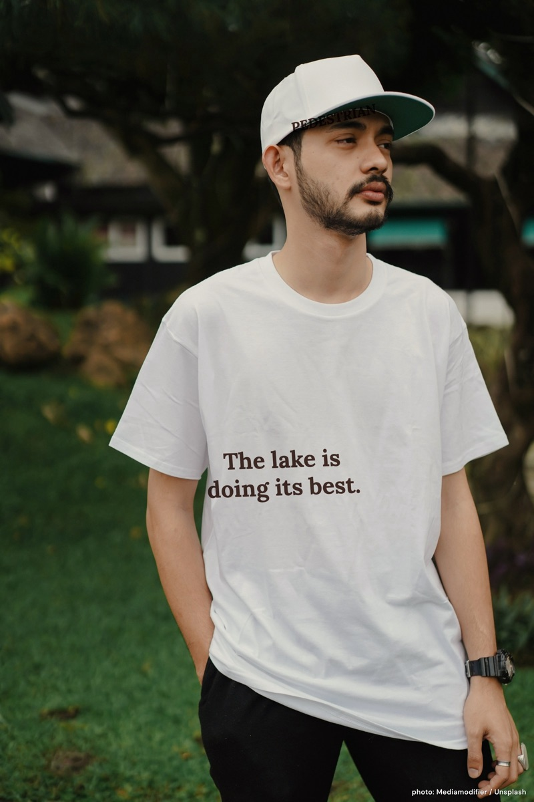
The lake is doing its best
The lake is doing its best. A tee, and a three-inch sticker for the water bottle.
Champlain on a gray day, which is most days, deserves someone in its corner. This is that person. Lora italics on cream, and the sticker version costs about what a creemee does.
For anyone who has looked at the lake in March and loved it anyway.
Not in the store yet $25 tee · $4 sticker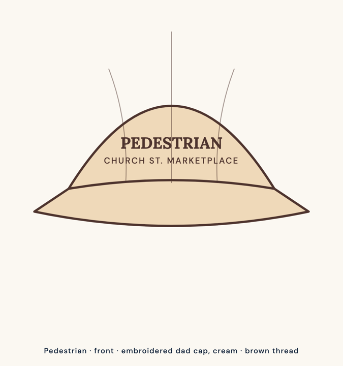
Pedestrian
PEDESTRIAN, embroidered small, with CHURCH ST. MARKETPLACE underneath.
Church Street is a pedestrian marketplace, which makes this the only title the street will ever give you. Embroidered on a cream dad cap in brown thread. Wear it to the market, wear it to the Pit, wear it while jaywalking on Main and reflect on the irony.
For hat people, and people who walk everywhere and want that on record.
Not in the store yet $28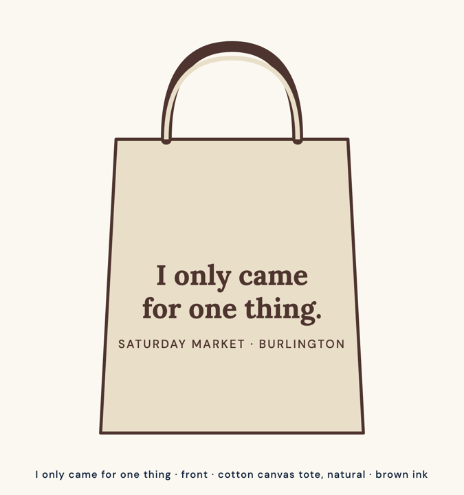
I only came for one thing.
I only came for one thing. SATURDAY MARKET · BURLINGTON, on a ten-ounce canvas tote.
Nobody in the history of the Saturday market has left with one thing. This bag knows that about you and holds the other eleven things without comment.
For market people. It fits a week of vegetables and one impulse pastry.
Not in the store yet $22Not in the store yet
The four new pieces above are mockups. If you would buy one, email BtownBrief@gmail.com with which one. Enough replies and it goes up on Printify the same week.
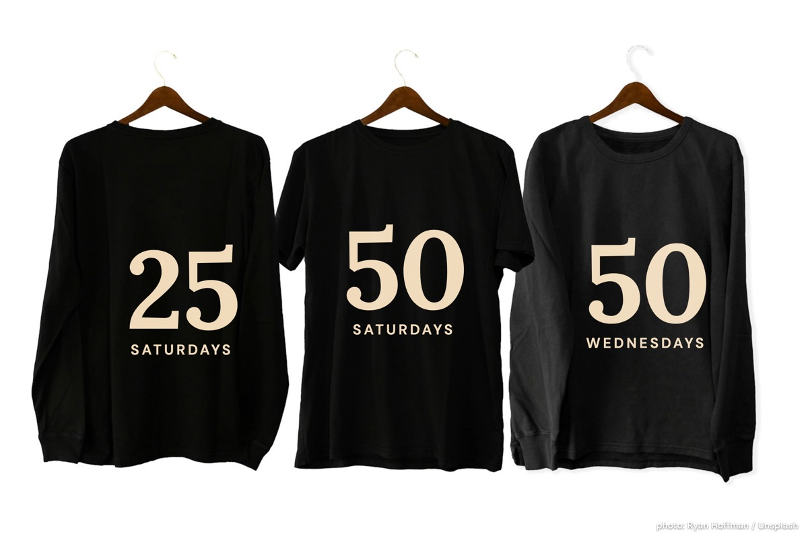
The rack you cannot buy from
The rule, in full: show up. Saturday coffee is counted on paper at the table, one line per name per week. The Wednesday run at Pomeroy is counted the same way. When your name hits the number, the shirt is handed over at the table, in front of everyone. That moment is the merch. No residency test, no years-here math, no exceptions for people who know Stephen. Attendance only.
-
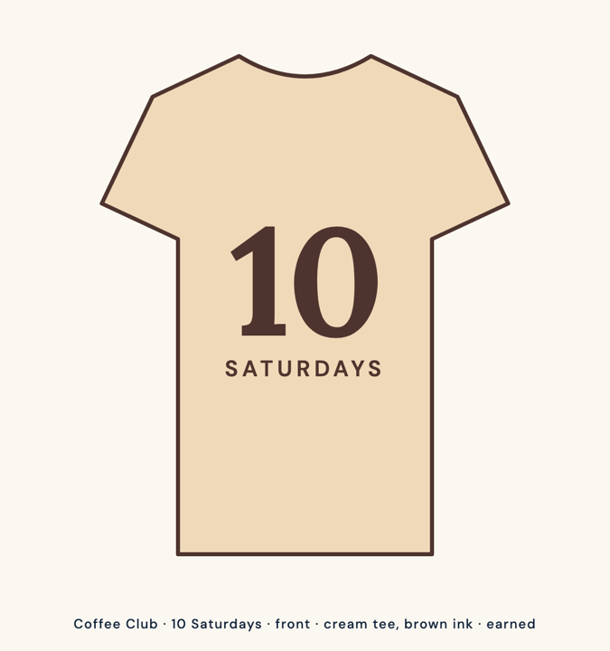
Coffee Club · 10 Saturdays
Back: Ten Saturdays. Big table, right side.
Earned by 10 Saturday coffees
-
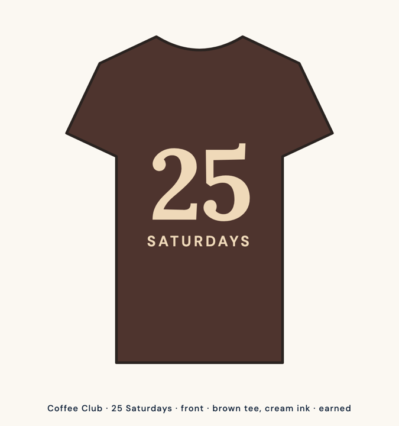
Coffee Club · 25 Saturdays
Back: Half a year of Saturday mornings spent talking to strangers. They're not strangers now.
Earned by 25 Saturdays
-
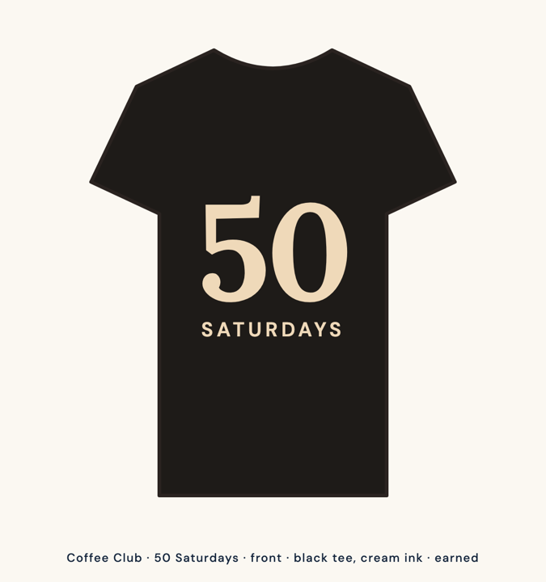
Coffee Club · 50 Saturdays
Back: Fifty Saturdays. I know where the good chairs are.
Earned by 50 Saturdays, a year of them
-
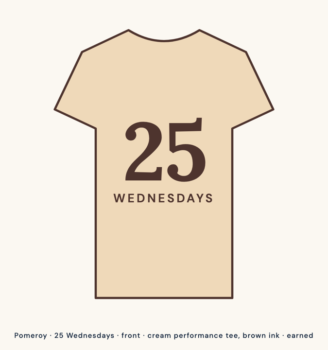
Pomeroy · 25 Wednesdays
Back: Twenty-five Wednesdays at Pomeroy. Still calling next.
Earned by 25 Wednesday runs
-
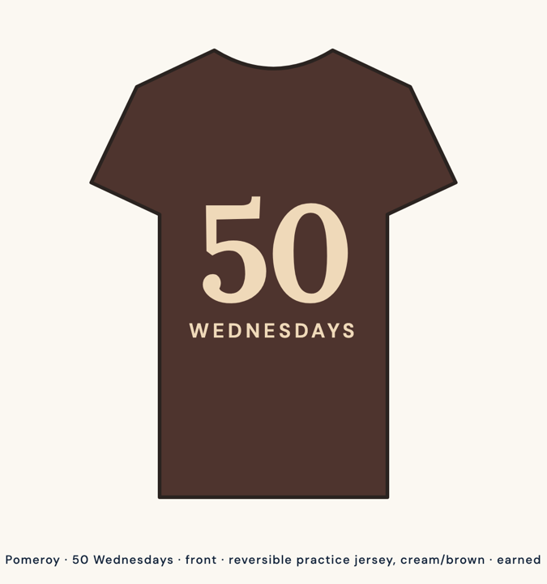
Pomeroy · 50 Wednesdays
Back: Fifty runs. We've got next. We've had next for a year.
Earned by 50 runs
-
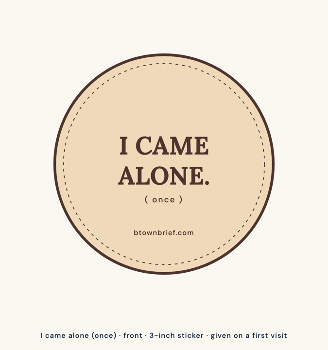
I came alone. (once)
Given, not earned. Handed to anyone on their first visit, because walking in alone is the hardest thing anyone does here. The once is the promise.
Eight more designs, still on sale
- Sturgeon the actual prehistoric fish in the lake, as a natural history etching
- O.N.E. Rat's Nest the Old North End's tangle of wires and dangling sneakers
- Sunset & Mountains the Adirondack sunset as a 90s fleece badge
- Breakwater Lighthouse the lighthouse as a navigational chart, not another pretty picture
- Port of Burlington something the ferry deckhands would actually wear
- Grid of BTV the Burlington starter pack, in a clean grid
- Church & Cherry St Bike the daily commute as heroic modernist transit art
- Lake Glass Champlain gone completely still, cropped until it is just colour
Spotted in the wild
The people in the photos above are mockups. The people wearing these around town are real. If you are one of them, send a photo and it goes here, with or without your name.